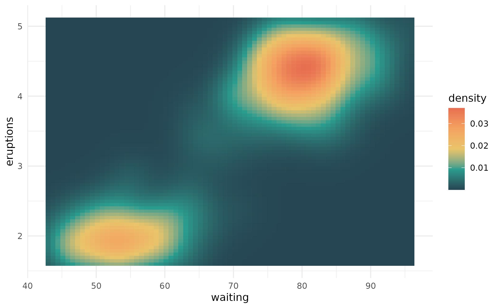

This creates a character vector that represents palettes so when it is printed, it displays the palette colors.
color_palette( pal = character(), n = length(pal), type = c("discrete", "continuous") ) is_color_palette(pal)
| pal |
|
|---|---|
| n | The number of colors |
| type | The type of palette, either |
A color palette object.
# use color_palette() to extend or shorten an existing palette color_palette(album_palettes$lover, n = 10, type = "continuous")#> <color_palette[10]> #> #8C4F66 #> #936472 #> #9A7A7F #> #947B78 #> #897569 #> #7C7A74 #> #6C8B9A #> #6F9CB9 #> #ADADC6 #> #EBBED3color_palette(album_palettes$fearless, n = 10, type = "continuous")#> <color_palette[10]> #> #6B5E57 #> #706056 #> #756356 #> #81674A #> #8F6C3B #> #A27B3E #> #B99453 #> #CDAC6D #> #D7C097 #> #E1D4C2color_palette(album_palettes$red, n = 3)#> <color_palette[3]> #> #201F39 #> #A91E47 #> #B0A49A# you can also define your own color palette (my_pal <- color_palette(pal = c("#264653", "#2A9D8F", "#E9C46A", "#F4A261", "#E76F51")))#> <color_palette[5]> #> #264653 #> #2A9D8F #> #E9C46A #> #F4A261 #> #E76F51# and then use that palette for plotting library(ggplot2) ggplot(faithfuld) + geom_tile(aes(waiting, eruptions, fill = density)) + scale_fill_gradientn(colours = my_pal) + theme_minimal()